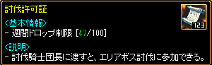

レッドストーン楽しんでますか？ 強くなるには不可欠ゲーム内通貨インゴットを稼ぐにはどんな方法があるのかまとめてみました！ 詳しく解説しているので、是非ご覧ください！
ってならないようにここに書いておきます。 コツコツ稼ぐ派
1. ユニークアイテムを分解する
2. アイテムを売る
3. インクを売る/集める
4. 混沌周回する
5. オプションお守り代行/売る
6. 毎日討伐へいく(lv800~)
7. 精鋭討伐へいく(lv1250~)
努力型
8. 地下キャラを作る
9. 討伐キャラを作る
待ち型
10. 買い溜めし放出する
12. 目利きをする(転売)
お金を使う
13. ロトを買う
14. GEMを売る
1.ユニークアイテムを分解する
ニークアイテムを分解するってナンですか？
稼げるんですか？？カバンパンパンなんだけど😡
ユニークアイテムを落としたら分解してみよう！ そしたら結晶石や神秘石がもらえるよ。
2.アイテムを売る
ニークアイテムを分解するってナンですか？
稼げるんですか？？カバンパンパンなんだけど😡
分解したらこの5つのアイテムがもらえるよ！
残念ながらこの状態では売れないんだ。ここからさらにアイテムを加工していくよ！ この中で売れるのは3つだけ！
ちょっと面倒だけど、 かけらを神秘石や出土品に変換しなければいけないんだ！
かけら単体だけだと買ってくれる人がいないだよね。
どうして、買って
おれめちゃ分解したのに
変換した出土品は200個1SET/1本になり999個/5本
出土品はあまり価値がなくて、クリーチャーの餌やヤティカヌで使う人がいるよ。
神秘石はちょっと違うよ。神秘石は200個4本/999個20本になるよ。ちょっと価値があるね！
餌にするにも美味しいし、実は買取イベントで高くなるアイテムなんだ。

3.神秘石を売る
こなんとレッドストーンには年に数回
【買取イベント】があってその時だけ凄く高くなるアイテムが神秘石なんだ。
【普段200個/4本で999個/20本】
これが、なんと！【露天売りで、200個12本】まで高くなるんだ。
しかもこれは露天等で売った場合で、【自分で鍛冶屋で売ると15本】にもなるんだ。
手間だけど儲かるのは確か！
だから売る時期を待てばすごく儲かるかもしれない。
鍛冶屋とペイトンに売るよ。
たとえば、【神秘石を999個】もってたとします。
それを神秘石のかけらに変換してフルチャにします！
それらを鍛冶屋やペイトンに売ると、
【999個で75本】になるのでめちゃちゃお金持ちになるのです！！
4.インクを売る・集める
インクってどこでどうやってどうするんですか？ 教えてください
インクは、アイテムを【ラサ】に渡すとインクに変えてくれるよ。 アイテムは青い色でオプションがついているものです。
他にも混沌の大地で【インク瓶】を拾うと取得できます。 混沌の大地は下記記事で説明。
5.混沌周回する・赤い光
混沌といえば俺っち。混沌を回ると儲かるの？ 赤い光を売った方がいい？？解説おねがいっち
|
【混沌を回る】【混沌を売る】 どっちがいいかな？ 周回すれば色々なアイテムが貰えるね 2段階目を周回すると、 ・炎の石 相場1本 ・金増幅 相場50m ・金再構成 相場1本 ・オプションお守り ・混沌の破片の袋 ・異界の強化石 相場30m が、クリアすると4個ゲットできる！ これはそれぞれ売ることで、赤い光1本より高くなることになるので金策にはいいよ！ しかも、混沌の破片を集めれば、混沌指を作ることもできるんだ！ 混沌のページを見てみてね！ |
6.オプションお守り代行/売る
お守りってなんだ？代行ってなんだ？
比率Lv1系のお守りはここから出るんだ！代行で人気なお守りの種類は！
知識比率Lv1
運比率Lv1
力比率Lv1
達人
移動速度
これらが出るとラッキー。
これを代行売りして成功したら報酬が貰える仕組みなんだ。
でもお守りの成功率実は…20%
成功する確率がとても低いの。
それでも成功報酬は高いからやる価値はあり！

このカラフルなお守りたちは 【討伐】で手に入るよ！
スキルお守り、 【セットOPお守り】、 【運命のOPお守り】、 【神秘のOPお守り】があるよ。
これも成功率実は…20%…！
この討伐から貰えるお守りは箱のまま露天に出す事もできるし、
取引可能だから無理に代行する必要はないよ。
代行するときは担保が必要な時があるから注意してね！
7.毎日討伐へいく(lv800~)
討伐ってなんですか？
どこから行って何が出るんですか？
討伐は「冒険バー」から行く事ができるよ！毎日デイリーで行けます！！ 5転生済みだと週に100枚、オーラが出る度に討伐許可証が貰える！
 |
|---|
8.地下キャラを作る
精鋭討伐はいくべき？ なにがでるの？？
精鋭討伐ではものすごく高価なものが落ちる時があるんだ！！ 1000UMUって聞いたことあると思うんだけど、それがごく稀に(3%くらい)でドロップします。 高額品を夢見て挑戦してるよ！ 精鋭は1週間に1回月曜日更新で、1週間に1回の楽しみって感じ！ クリア報酬にトレジャーボックスも貰えるし、中身も豪華だよ！ 1250を目指す価値は十分にある!!
9.地下キャラを作る
これは私の得意分野です！！
最初は地下キャラ作ろ！！ってくらいおすすめしてます
|
何故地下キャラを作るのか？ メインクエを完了させ、鏡は悪を-100にして（地下7回）赤い悪魔から5億か5本で買うと、鏡というものがもらえます。 欠片出し記事はここから 鏡を沢山貰ってアイテムコピーしてそれを売るってことです！！！ 鏡品は大体300本で売れます。30%の確率で鏡は成功します…。 なので鏡を貰えるキャラが多くなるほど成功率も上がり、お金持ちになれる！！ |
10.買い溜めし放出する


これは株みたいな感じ！
【買取イベント】 【かせ糸】 イベントなどで安くなるから貯金としてもっててもいいよね！
11.壺パーティ
1年に数回、B鯖で開催されたり、されなかったり ギルド単位で行われたりしてるよ 参加すると、炎の石・錬成剤・紺碧の宝石箱が貰える！
12.安く買って高く売る
相場を理解し、安いものを買い、それを売る・・・ 早くインゴが欲しい人は安く売る事があるのでそれを狙うといい⭕️
13.ロトを買う
課金する余裕がある人はロトボックスを買うと高額品が手に入れるチャンス！！ でもたまにハズレロトがあるから買う時はギルドに相談したりしよう！
14.GEM売りをする
レッドストーンでは課金アイテムを買う通貨はGEMと言います。 ゲーム内ではB鯖100GEM8本で取引されてるよ！ プレゼントシステムが利用できるアイテムを売るシステム ロトで爆死するとGEM売りのがよかった〜っていう人もいるんだ！